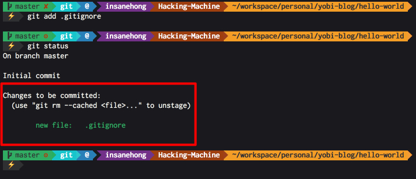

About Author

Insanehong
blog: http://insanehong.kr
twitter: @insanehong
github: insanehong.github.com
- NAVER Corporation, Front-End Engineer(2013~)
- Like Javascript, Dart, HTML5, CSS3,Responsive Web, Haroopress, Frends, Lean Startup, Open Source
- Hackrslab co-founder
- About me http://about.me/insanehong
About this Article
Date Released:
Tuesday, May 13 2014 10:05 PMlocal 저장소에 새로운 commit 하기
들어가기 앞서
이글은 Local에 git 저장소 만들기 에 이어 작성 된 글이다. 이 글에서 git 의 commit 과 push command 를 이용해서 local 의 변경내용을 원격저장소에 올리는 작업을 진행 할 예정이다. 추가적으로 git 이 파일을 어떻게 관리하는지 약간의 개념정리도 포함되어 있다.
사용법을 익히는 것이 우선이라 생각하면 개념부분은 스킵해도 무관하다.
git 의 작업공간
이전 글을 통해서 local git 저장소를 만들었다. 그럼 이제부터 git 이 파일을 어떻게 관리하는가를 알아보도록 한다.
git 저장소으 파일은 상태별로 아래와 같이 구분 되어 진다.
- Untracked
- Tracked
- Unmodified
- Modified
- Staged
Untracked
Untracked 라 하면 git 의 관리대상이 아닌 파일을 의미한다. git 저장소에 새로 추가되었지만 git 에게 한번도 알려준적이 없는 파일들이다.
Tracked
Tracked 는 git 으로 한번이라도 이력을 남긴 파일들이다. 말그대로 git 이 트레킹 하고 있는 파일들을 말한다.
commit 명령으로 이력을 남긴후 수정된적이 없다면 Unmodified 상태이다. 하지만 commit 이 이루어진 이후에 다시 수정이 이루어 졌다면 modified 상태가 된다.
Staged
Staged 는 commit 으로 추가 할수 있는 파일들이다. git 은 commit 할때 Staged 상태의 파일만을 묶어서 하나의 commit 으로 이력을 남긴다. 즉 git 에게 Staged 한 파일이라고 알려주어야만 commit 에 해당 파일을 추가 할수 있는 것이다.
반대로 Staged 상태의 파일이 하나도 존재 하지 않는 다면 git 에서는 commit 을 남길수 없다.
git 에게 해당 파일이 Staged 상태로 만드는 명령어가 바로 git add 이다. 이는 뒤에서 다시 다룰 것이다.
파일 상태 확인하기 (git status)
자 그럼 git 을 통해 작업을 하다보면 어떤 파일들이 modified 되었으며 새로 추가된 Untracked 파일은 무엇인지 등의 현재 상태를 알아볼 필요가 생겼다.
이럴때 사용하는 명령어가 git status 이다.
지금 현재는 git 저장소를 초기화만 한 상태이다. 새로 추가된 파일도 없고 git 으로 코드 이력을 남겨본적도 없다.
현재 디렉토리라 함은 이전 글에서 만든
hello-world디렉토리 이다.
이 상태에서 git status 명령을 실행해 보자
$ git status
현재 상태에서는 이력이 존재하지 않으며 새로운 파일을 추가하여 Staged 상태로 만들라는 git의 친절한 설명을 볼수 있다.
자 그럼 git 이 시키는 대로 새로운 파일을 추가해서 Staged 상태로 만들어보자
.gitignore 파일
git 으로 관리되는 코드 저장소에서 파일을 관리하다 보면 OS, Edior, IDE 등에서 만들어내는 프로젝트와 관계없는 파일들이 생기게 되는 경우가 있다.
물론 로그나 db 파일등과 같이 프로젝트와 관련은 있지만 원격저장소를 통해 코드를 공유할 필요가 없는 파일들도 있을수 있다.
이런 경우 해당 파일들을 git 이 트레킹 하지 않고 무시하도록 해주는 역활을 하는 것이 .gitignore 파일이다.
보통 .gitignore 파일은 처음에 만들어 두는 것이 좋다. 앞으로 생길 실수를 방지하는 차원도 있고 커밋이 쌓이고 나면 수정 할수 없는 첫번째 initialize commit 으로 .gitignore 파일을 사용하는 방법을 사용하는 것이다.
.gitignore 파일 작성법은 이후에 다시 다루는 것으로 하고 일단은 자동완성툴을 이용해보자.
먼저 .gitignore 파일을 만든다.
$ touch .gitignore
$ ls -al
.gitignore 파일 내용은 자동완성 툴 이용해서 만든다.
http://www.gitignore.io/ 에서 본인에 환경에 맞는 내용을 만든다.
원하는 내용을 선택한 후 generate 버튼을 누르면 다음과 같이 내용이 자동으로 만들어 진다.
내용을 만들었다면 .gitignore 파일에 내용을 추가 한다.
$ vi .gitignore
// 파일을 열고 i 를 누르면 편집모드가 된다.
// 복사한 파일을 붙혀 넣기 한후
//:wq 를 입력하고 엔터를 누르면 내용을 저장하고 vi 를 빠져나오게 된다.
node.js 를 알고 있다면 gig 도 한번 봐보길 바란다.
자 이제 .gitignore 파일내용 도 추가 했으니 git 에게 현재 파일 상태를 다시 물어보자
$ git status
그림에서 보듯이 .gitignore 파일이 Untracked 상태임을 git 이 친절하게 알려주고 commit 을 하기 위해서는 git add 명령을 통해 Staged 상태로 만들어야 하는 것 까지 친절하게 알려준다.
git add - Untracked 파일 Staged 상태로 만들기
위에서 언급 했듯이 Staged 상태로 만들기 위해 git add 명령을 사용한다.
$ git add .gitignore
$ git status

git status 명령을 통해 현재 .gitignore 파일이 Staged 상태가 된 것을 확인 할수 있다.
'Changes to be committed:' 아래 나오는 파일들이 바로
Staged상태의 파일들이다.
자 이제 .gitignore 파일은 commit 을 할 수 있게 되었다.
git commit - Staged 파일을 Tracked 로 만들기
위에서 얘기 했듯이 .gitignore 파일을 initialize commit 으로 만들 것이다.
자 그럼 이제 commit 을 남겨보자
커밋을 남기는 방법은 2가지 이다.
- git commit : 멀티라인에 매우 상세한 메세지를 적을 수 있다. 실행하면 vi 등의 에디터가 열린다.
- git commit -m :
-m옵션을 사용하면 inline command 로 commit 과 동시에 메세지를 남길수 있다.
commit 명령어의 옵션들과 다양한 커밋 관리등에 대해서는 다음에 다시 다룰 예정이기에 이번에는 -m 옵션을 사용해서 inline command 로 바로 commit 을 남겨보자.
커밋메시지는 아주 상세하게 적어두는 것이 좋다. 이후에 버그트레킹이나 이 커밋이 왜 들어가게 되었는지를 시간이 한참 지나서 다시 알아보게 되는 경우가 있는데 이럴때 커밋 메세지가 자세히 적혀져 있지 않다면 커밋에서 수정된 내용을 일일이 확인해야 하는 경우도 생긴다.
하지만 이번 commit 은 단순히 'initialize commit' 이기에 간단히 남겨 보겠다.
$ git commit -m 'repository initialize : add .gitignore file'
그림에서 알수 있듯이 git 이 root-commit 이 fd2f9f8 라는 해시를 가진 커밋으로 남겨졌음을 알려준다.
git log - commit 이력을 확인하자
자 그럼 커밋 이력은 어떻게 조회할가? 간단하다 git log 명령어를 사용한다.
$ git log
commit fd2f9f8b0ec294e33815ee48e5e6c0c77cc0d6a1
Author: insanehong <insanehong@gmail.com>
Date: Wed May 14 09:43:20 2014 +0900
repository initialize : add .gitignore file
커밋 로그를 조회하면 git config 를 통해서 설정한 author, email 정보를 가지고 커밋이 제대로 만들어졌다는 것을 확인 할수 있다.
git log 는 아래의 그림과 같이 옵션에 따라 매우 다양하게 그 표현 형태를 수정할 수 있다. 이 부분도 이후에 다시 다루도록 한다.
마무리
자 이제 기본적으로 commit 을 하기까지의 기본적인 개념과 실제 commit 을 남기는 것까지 해왔다. 이제 남은 것은 local 저장소에 남긴 커밋을 원격 저장소에 올리는 것이다.
이부분은 commit 을 관리하는 여러 방법을 소개하면서 다음 글에서 같이 다루도록 할 예정이다.